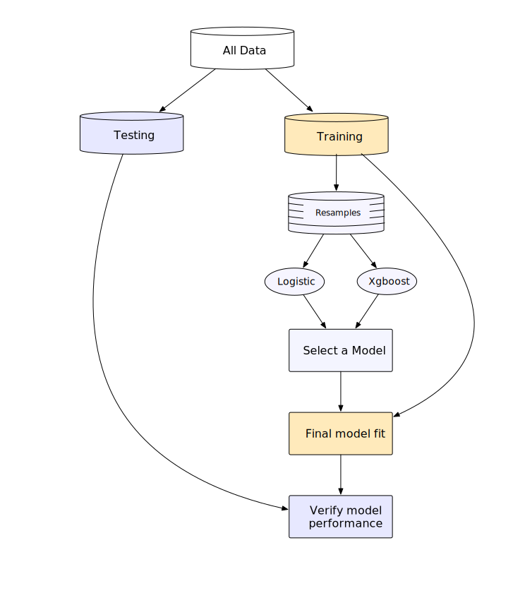
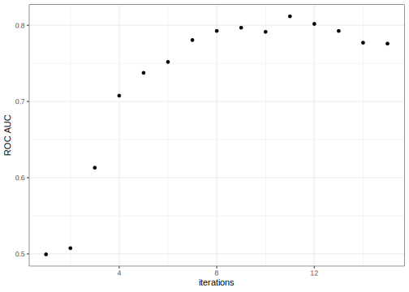

Annotations
01 - Introduction
👀
This page contains annotations for selected slides.
There’s a lot that we want to tell you. We don’t want people to have to frantically scribble down things that we say that are not on the slides.
We’ve added sections to this document with longer explanations and links to other resources.
Finalize and verify
This is a pretty complex data usage scheme. That is mostly because of the validation set. In every other case, the situation is much more simple.
The important point here is that: tidymodels does most of this work for you. In other words, you don’t have to directly specify which data are being used where.
In a later section, we will talk about methods of resampling. These methods are like repeated validation sets. As an example, the popular 10-fold cross-validation method is one such type of resampling. Validation sets are special cases of resampling where there is a single “resample”.
Most types of resampling use multiple hold-out sets of samples from the training set. In those cases, a diagram for data usage here would look like
In this case there is just “testing” and “training”. Once the final model is determined, the entire training set is used for the last fit.
This is the process that will be used for the tree frog data.
02 - Data Budget
Data splitting and spending
What does set.seed() do?
We’ll use pseudo-random numbers (PRN) to partition the data into training and testing. PRN are numbers that emulate truly random numbers (but really are not truly random).
Think of PRN as a box that takes a starting value (the “seed”) that produces random numbers using that starting value as an input into its process.
If we know a seed value, we can reproduce our “random” numbers. To use a different set of random numbers, choose a different seed value.
For example:
set.seed(1)
runif(3)#> [1] 0.2655087 0.3721239 0.5728534# Get a new set of random numbers:
set.seed(2)
runif(3)#> [1] 0.1848823 0.7023740 0.5733263# We can reproduce the old ones with the same seed
set.seed(1)
runif(3)#> [1] 0.2655087 0.3721239 0.5728534If we don’t set the seed, R uses the clock time and the process ID to create a seed. This isn’t reproducible.
Since we want our code to be reproducible, we set the seeds before random numbers are used.
In theory, you can set the seed once at the start of a script. However, if we do interactive data analysis, we might unwittingly use random numbers while coding. In that case, the stream is not the same and we don’t get reproducible results.
The value of the seed is an integer and really has no meaning. Max has a script to generate random integers to use as seeds to “spread the randomness around”. It is basically:
cat(paste0("set.seed(", sample.int(10000, 5), ")", collapse = "\n"))#> set.seed(9725)
#> set.seed(8462)
#> set.seed(4050)
#> set.seed(8789)
#> set.seed(1301)03 - What Makes A Model?
What is wrong with this?
If we treat the preprocessing as a separate task, it raises the risk that we might accidentally overfit to the data at hand.
For example, someone might estimate something from the entire data set (such as the principle components) and treat that data as if it were known (and not estimated). Depending on the what was done with the data, consequences in doing that could be:
- Your performance metrics are slightly-to-moderately optimistic (e.g. you might think your accuracy is 85% when it is actually 75%)
- A consequential component of the analysis is not right and the model just doesn’t work.
The big issue here is that you won’t be able to figure this out until you get a new piece of data, such as the test set.
A really good example of this is in ‘Selection bias in gene extraction on the basis of microarray gene-expression data’. The authors re-analyze a previous publication and show that the original researchers did not include feature selection in the workflow. Because of that, their performance statistics were extremely optimistic. In one case, they could do the original analysis on complete noise and still achieve zero errors.
Generally speaking, this problem is referred to as data leakage. Some other references:
- Overfitting to Predictors and External Validation
- Are We Learning Yet? A Meta Review of Evaluation Failures Across Machine Learning
- Navigating the pitfalls of applying machine learning in genomics
- A review of feature selection techniques in bioinformatics
- On Over-fitting in Model Selection and Subsequent Selection Bias in Performance Evaluation
04 - Evaluating Models
Where are the fitted models?
The primary purpose of resampling is to estimate model performance. The models are almost never needed again.
Also, if the data set is large, the model object may require a lot of memory to save so, by default, we don’t keep them.
For more advanced use cases, you can extract and save them. See:
The final fit
Since our data spending scheme created the resamples from the training set, last_fit() will use all of the training data to fit the final workflow.
As shown in the Whole Game slides, there is a slightly different scheme used when we have a validation set (instead of multiple resamples like 10-fold CV).
05 - Feature Engineering
Using a workflow
What’s going on with the
prediction from a rank-deficient fit may be misleading
warnings?
For linear regression, a computation is used called matrix inversion. The matrix in question is called the “model matrix” and it contains the predictor set for the training data.
Matrix inversion can fail if two or more columns:
- are identical, or
- add up to some other column.
These situations are called linear dependencies.
When this happens, lm() is pretty tolerant. It does not fail but does not compute regression coefficients for a minimal number of predictors involved in the dependency (and issues the warning above).
For these data, there is this dependency:
shooter_type_{level} = shooter_{level}Here is what is happening: since the player shooting only ever plays a single position, their indicators sum up (row-wide) to the same data as the sum of the shooter type indicators.
In other words, if you know the player’s name, you know their position too. This is a perfect redundency in the data.
The way to avoid this problem is to use step_lincomb(all_numeric_predictors()) in the recipe. This step removes the minimum number of columns to avoid the issue.
Just in case you ever want to figure out what the specific issues are, this code might help:
# Get the exact data set used to fit the model. For a recipe, that is:
processed_data <-
nhl_indicators %>%
prep() %>%
bake(new_data = NULL, all_predictors())
# Let's capture their names:
pred_names <- names(processed_data)
# caret has a function to determine the variables involved in each dependency
issues <- caret::findLinearCombos(processed_data)
# Convert the column index to names:
issues_vars <- purrr::map(issues$linearCombos, ~ pred_names[.x])
# caret proposes removing these columns to get rid of the issue. The choice
# is pretty arbitrary:
removed_names <- pred_names[issues$remove]tl;dr
Linear regression detects some redundancies in the predictor set. We can ignore the warnings since lm() can deal with it or use step_lincomb() to avoid the warnings.
Per-player statistics
The effect encoding method essentially takes the effect of a variable, like player, and makes a data column for that effect. In our example, the ability of a player to have an on-goal shot is quantified by a model and then added as a data column to be used in the model.
Suppose NHL rookie Max has a single shot in the data and it was on goal. If we used a naive estimate for Max’s effect, the model is being told that Max should have a 100% chance of being on goal. That’s a very poor estimate since it is from a single data point.
Contrast this with seasoned player Davis, who has taken 250 shots and 75% of these were on goal. Davis’s proportion is more predictive because it is estimated with better data (i.e., more total shots). Partial pooling leverages the entire data set and can borrow strength from all of the players. It is a common tool in Bayesian estimation and non-Bayesian mixed models. If a player’s data is of good quality, the partial pooling effect estimate is closer to the raw proportion. Max’s data is not great and is “shrunk” towards the center of the overall on goal proportion. Since there is so little known about Max’s shot history, this is a better effect estimate (until more data is available for him).
The Stan documentation has a pretty good vignette on this: https://cran.r-project.org/web/packages/rstanarm/vignettes/pooling.html
Also, Bayes Rules! has a nice section on this: https://www.bayesrulesbook.com/chapter-15.html
If the outcome were numeric, the effect would be the mean of the outcome per player. In this case, partial pooling is very similar to the James–Stein estimator: https://en.wikipedia.org/wiki/James–Stein_estimator
Player effects
Effect encoding might result in a somewhat circular argument: the column is more likely to be important to the model since it is the output of a separate model. The risk here is that we might over-fit the effect to the data. For this reason, it is super important to make sure that we verify that we aren’t overfitting by checking with resampling (or a validation set).
Partial pooling somewhat lowers the risk of overfitting since it tends to correct for players with small sample sizes. It can’t correct for improper data usage or data leakage though.
Angle
About geometry…
The coordinates for the rink are centered at (0, 0) and the goal lines are both 89 ft from center. The center of the goal on the left is at (-89, 0) and the right-hand goal is centered at (89, 0).
For angle to center of the goal mouth, the formula is
\[a = \tan^{-1}\left(\frac{y}{x}\right)\] This is in radian units and we can convert to degrees using
\[a = \frac{180}{\pi}\tan^{-1}\left(\frac{y}{x}\right)\] For the angle to the goal, we need to alter \(x\) and use x* = (89 - abs(coord_x)) instead.
06 - Tuning Hyperparameters
Update parameter ranges
In about 90% of the cases, the dials function that you use to update the parameter range has the same name as the argument. For example, if you were to update the mtry parameter in a random forests model, the code would look like
parameter_object %>%
update(mtry = mtry(c(1, 100)))In our case, the argument name is deg_free but we update it with spline_degree().
deg_free represents the general concept of degrees of freedom and could be associated with many different things. For example, if we ever had an argument that was the number of degrees of freedom for a \(t\) distribution, we would call that argument deg_free.
For splines, we probably want a wider range for the degrees of freedom. We made a specialized function called spline_degree() to be used in these cases.
How can you tell when this happens? There is a helper function called tunable() and that gives information on how we make the default ranges for parameters. There is a column in these objects names call_info:
library(tidymodels)
ns_tunable <-
recipe(mpg ~ ., data = mtcars) %>%
step_ns(dis, deg_free = tune()) %>%
tunable()
ns_tunable#> # A tibble: 1 × 5
#> name call_info source component component_id
#> <chr> <list> <chr> <chr> <chr>
#> 1 deg_free <named list [3]> recipe step_ns ns_P1Tjgns_tunable$call_info#> [[1]]
#> [[1]]$pkg
#> [1] "dials"
#>
#> [[1]]$fun
#> [1] "spline_degree"
#>
#> [[1]]$range
#> [1] 1 15Boosted tree tuning parameters
When deciding on the number of boosting iterations, there are two main strategies:
Directly tune it (
trees = tune())Set it to one value and tune the number of early stopping iterations (
trees = 500,stop_iter = tune()).
Early stopping is when we monitor the performance of the model. If the model doesn’t make any improvements for stop_iter iterations, training stops.
Here’s an example where, after eleven iterations, performance starts to get worse.

This is likely due to over-fitting so we stop the model at eleven boosting iterations.
Early stopping usually has good results and takes far less time.
We could an engine argument called validation here. That’s not an argument to any function in the xgboost package.
parsnip has its own wrapper around (xgboost::xgb.train()) called xgb_train(). We use that here and it has a validation argument.
How would you know that? There are a few different ways:
- Look at the documentation in
?boost_treeand click on thexgboostentry in the engine list. - Check out the pkgdown reference website https://parsnip.tidymodels.org/reference/index.html
- Run the
translate()function on the parsnip specification object.
The first two options are best since they tell you a lot more about the particularities of each model engine (there are a lot for xgboost).
The final fit to the NHL data
Recall that last_fit() uses the objects produced by initial_split() to determine what data are used for the final model fit and which are used as the test set.
For the validation set, last_fit() will use the non-testing data to create the final model fit. This includes the training and validation set.
There is no agreement in the community on whether this is the best approach or if we should just use the training set. There are good arguments either way.
If you only want to use the training set for the final model, you can do this via:
training_data <- nhl_val$splits[[1]] %>% analysis()
# Use `fit()` to train the model on just the training set
final_glm_spline_wflow <-
glm_spline_wflow %>%
fit(data = training_data)
# Create test set predictions
test_set_pred <- augment(final_glm_spline_wflow, nhl_test)
# Setup and compute the test set metrics
cls_metrics <- metric_set(roc_auc, accuracy)
test_res <-
test_set_pred %>%
cls_metrics(on_goal, estimate = .pred_class, .pred_yes)
test_resExplain yourself
Some other resources:
A tidymodels explainer
For our example, the angle was an original predictor. Recall that we made spline terms from this predictor, so there are derived features such as angle_ns_1 and so on.
Original versus derived doesn’t affect local explainers since we are focused on a single prediction.
For global explainers, we should decide between:
- explaining the overall affect of angle (lumping all its features into one importance score), or
- explaining the effect of each term in the model (including
angle_ns_1and so on).
The choice depends on what you want. For example, if we have an original date predictor and make features for month and year, is it more informative to know if date is important (overall) or exactly how the date is important? You might want to look at it both ways.